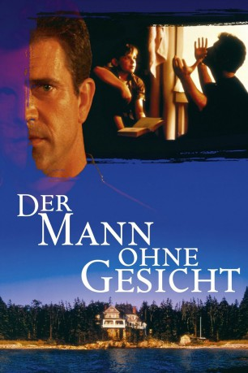
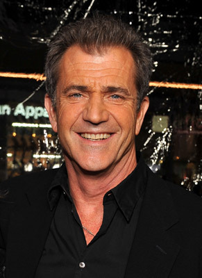
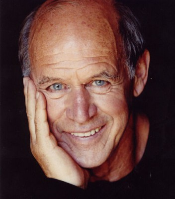
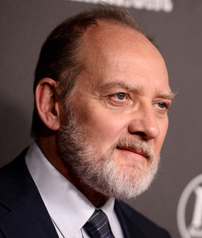
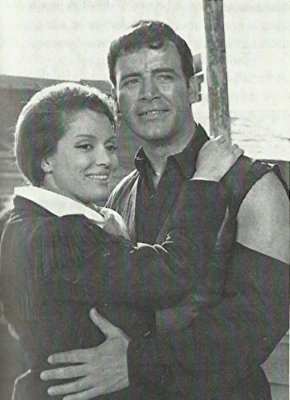

#2867 Der Mann ohne Gesicht
Alternativ: The Man Without a Face
 
 IMDB-Wertung: 6.7 / 10
IMDB-Wertung: 6.7 / 10  Metascore: 62
Metascore: 62 
Der kleine Chuck verbringt die Sommerferien mit seiner Mutter und seinen Halbschwestern in einem Strandhaus in Maine. Er fühlt sich einsam und von seiner Familie unverstanden. Chuck hat nur ein Ziel: er möchte in die Kadettenschule aufgenommen werden, die schon sein Vater besuchte. Bei der Aufnahmeprüfung ist er durchgefallen. Er hat noch eine weitere Chance, ohne Nachhilfe kann er es aber nicht schaffen. Eines Tages lernt Chuck den ehemaligen Lehrer Justin McLeod kennen, dessen Gesicht bei einem tragischen Unfall schrecklich entstellt wurde. Er lebt zurückgezogen und wird von allen gemieden. Chuck überwindet seine Angst vor dem Fremden und bittet ihn um Hilfe. McLeods willigt nach längerem Zögern ein und die beiden werden auch bald Freunde. Bis McLeods Vergangenheit sie einholt.
Jahr: 1993
Dauer: 114 Minuten
FSK: 6
Land: USA Studio: Warner Bros.Tonspuren: DD2.0 - ,
Untertitel: Deutsch,
Auflösung: 1080p (1920x1080) Größe: 7833 MB
Genre: Drama
Regisseur:  Mel Gibson
Mel Gibson
Drehbuch: Isabelle Holland, Malcolm MacRury
Soundtrack: James Horner
Darsteller:
-  Mel Gibson als Justin McLeod
- Nick Stahl als Charles E. 'Chuck' Norstadt
- Margaret Whitton als Catherine Palin
- Fay Masterson als Gloria Norstadt
- Gaby Hoffmann als Megan Norstadt
-  Geoffrey Lewis als Chief Wayne Stark
- Richard Masur als Prof. Carl Hartley
- Michael DeLuise als Douglas Hall, Gloria's Boyfriend
- Ethan Phillips als Todd Lansing
- Jack De Mave als Mr. Cooper
- Viva als Mrs. Cooper
-  Zach Grenier als Dr. Lionel Talbot, Psychiatrist
- Jean De Baer als Mrs. Lansing
- Justin Kanew als Rob Lansing
- Sean Kellman als David Taylor-Fife
- Chris Lineburg als Scott Pearson
- Kelly Wood als Amy Banks
- Jessica Taisey als Signy Eaton
- David A. McLaughlin als Chuck's Father
-  George Martin als Sam the Barber
- Timothy Sawyer als Gus
- Lawrence Wescott Jr. als Bob
- Michael Currie als Mr. Cameron, General Store Owner
- Stanja Lowe als Mrs. Cameron
- William Meisle als Judge Sinclair
- Robert Hitt als Mr. William McDowell
- Mary Lamar Mahler als Miss Fletcher, Children's Aid
- Robert DeDiemar Jr. als Chuck at age 17
- Drew Guenett als Ferry Crew Member
- Gene Leverone als Holyfield Master #1
- Malcolm MacRury als Holyfield Master #2
- George D. Fuller als Speaker at Graduation
- Harriette C. Henninger als Neighbor
- Edmund Genest als Husband #6
- John B. Guptill als Chuck's Friend
- Michael Forte als Pedestrian
- Elizabeth S. Clarke als Ferry Passenger
- Sam Nelson als Beluga , uncredited
Datei: X:\1993\Mann ohne Gesicht, Der (1993, FSK6, 1920x1080).mkv seit 27.12.2015
Festplatte: HD 1992-1995
 Es gibt insgesamt 68 Filme in der Gruppe '1993'
Es gibt insgesamt 68 Filme in der Gruppe '1993'